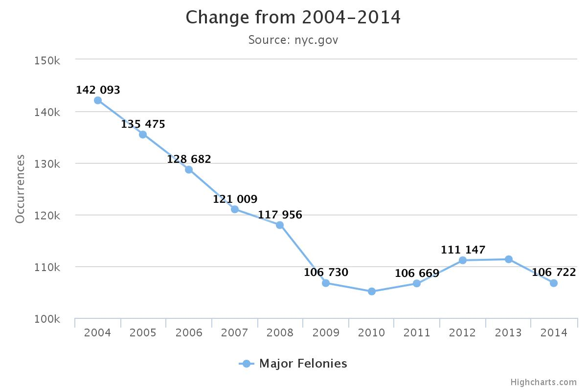

N.Y. DangerZone?
Percentage and rate of felony occurences for five boroughs in 2015
click text for more info
New York City is as safe as it has ever been in recent history, according to a New York Times report. In 2015, there was a 2 percent decline in major felonies. There was a record low in murders in 2014 with 333. Arrests are also down 13 percent from 384, 770 in 2014 to 333, 115 last year.
Felony Occurrances from 2004-2014

Source: http://www.nyc.gov/html/nypd/html/crime_prevention/crime_statistics.shtml